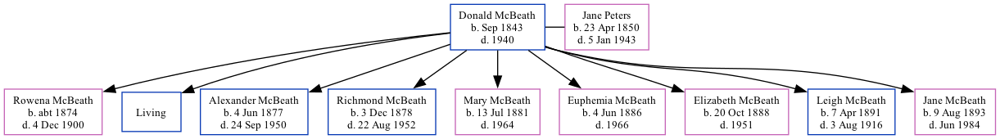

Donald McBeath 1843 - 1940
[ Home ] | [ Calendar ] | [ Surnames Index ] | [ Family History ], Donald Mcbeath, the husband of Jane Marion Peters (the second cousin three-times-removed on the father's side of Nigel Horne), was born in New Brunswick, Canada in Sep 1843 andhad 9 children, Rowena Isabella, Henry P, Alexander Wathen, Richmond Noble, Mary Elizabeth Grace, Euphemia Alberta, Elizabeth Arletta, Leigh Melbourn and Jane Irene. In 1911, he lived at his birthplace1.
He died in 1940.
Children
- Rowena Isabella was born c. 1874
- Alexander Wathen was born on Jun 4, 1877
- Richmond Noble was born on Dec 3, 1878
- Mary Elizabeth Grace was born on Jul 13, 1881
- Euphemia Alberta was born on Jun 4, 1886
- Elizabeth Arletta was born on Oct 20, 1888
- Leigh Melbourn was born on Apr 7, 1891
- Jane Irene was born on Aug 9, 1893
Citations
- Canada Census 1911 - Findmypast (was the head of the household)
Media
Canada Census 1911 Transcription - CAN-CENSUS-1911-01307386
Family Tree
Generated by Ged2Site. Last updated on Jul 20, 2025